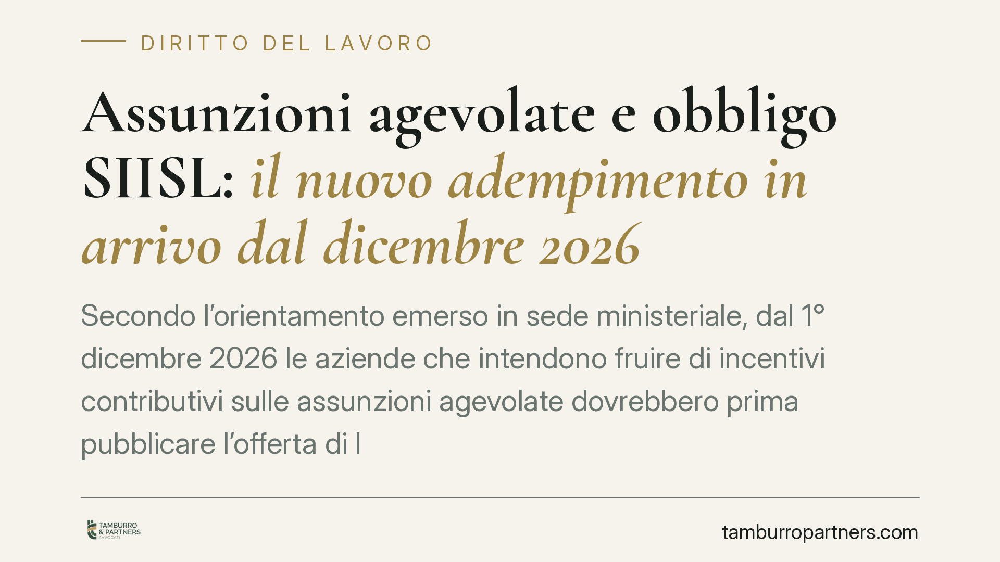

Assunzioni agevolate e obbligo SIISL: il nuovo adempimento in arrivo dal dicembre 2026
Secondo l'orientamento emerso in sede ministeriale, dal 1° dicembre 2026 le aziende che intendono fruire di incentivi contributivi sulle assunzioni agevolate dovrebbero prima pubblicare l'offerta di lavoro sul portale SIISL gestito dall'INPS. Un passaggio formale che diventa condizione sostanziale per l'agevolazione: ignorarlo espone al recupero dei benefici. Analizziamo lo stato dell'arte e cosa conviene predisporre fin da ora.

Di cosa si parla
Il SIISL (Sistema Informativo per l'Inclusione Sociale e Lavorativa) è la piattaforma telematica introdotta per far incontrare domanda e offerta di lavoro e per gestire i percorsi di attivazione dei beneficiari di misure di sostegno. Nasce nell'ambito della riforma degli strumenti di contrasto alla povertà e di politica attiva del lavoro.
L'ipotesi oggi all'attenzione degli operatori è che, a partire dal 1° dicembre 2026, la pubblicazione preventiva dell'offerta di lavoro sul portale SIISL diventi condizione di accesso agli incentivi contributivi collegati alle assunzioni agevolate. In sostanza: niente pubblicazione, niente beneficio.
Una premessa di trasparenza sul quadro normativo
È doveroso un avvertimento. Alla data di redazione di questo contributo, l'adempimento è riconducibile a un provvedimento del Ministero del Lavoro non ancora pubblicato in via definitiva nei suoi contenuti attuativi. Decorrenza, perimetro degli incentivi interessati e modalità operative vanno pertanto considerati prospettici: trattiamo un obbligo annunciato, non ancora consolidato.
Invitiamo quindi a verificare, prima di qualsiasi scelta operativa, il testo definitivo del decreto e le istruzioni applicative che l'INPS renderà con propria circolare o messaggio. È su quegli atti — non su anticipazioni — che andrà calibrata la condotta aziendale.
Il principio di fondo: incentivi condizionati
Il meccanismo si inserisce in una logica già nota al diritto degli incentivi occupazionali: il beneficio contributivo non è mai incondizionato, ma presuppone il rispetto di presupposti formali e sostanziali. L'art. 31 del D.Lgs. 150/2015 fissa i principi generali di fruizione degli incentivi all'assunzione (tra cui il rispetto delle norme in materia di lavoro, l'assenza di obblighi di assunzione preesistenti, la regolarità contributiva). La pubblicazione sul SIISL si aggiungerebbe come ulteriore condizione procedurale di accesso.
La conseguenza giuridica è lineare: se la condizione manca, l'incentivo non spetta. E un incentivo indebitamente fruito è soggetto a recupero.
Le conseguenze concrete: il recupero del beneficio
Qui sta il punto che merita attenzione. In caso di fruizione in assenza dei presupposti, l'INPS procede al recupero delle somme corrispondenti al beneficio indebitamente goduto. Si tratta, in concreto, della ricostituzione della contribuzione ordinaria che l'azienda avrebbe dovuto versare, con applicazione delle sanzioni civili previste dalla disciplina generale sull'omissione e sull'evasione contributiva (art. 116, comma 8, della L. 388/2000).
La distinzione tra omissione ed evasione non è di dettaglio: incide sulla misura delle sanzioni civili applicabili. Un conto è l'errore procedurale sanabile, altro è l'occultamento del presupposto. Per questo la gestione documentale della fase di pubblicazione dell'offerta diventa decisiva: serve a dimostrare la buona fede e il corretto adempimento.
Il nodo pratico: le assunzioni a cavallo del 1° dicembre
Il momento più delicato è la fase di transizione. Occorrerà capire con precisione quale sia la data rilevante: quella di pubblicazione dell'offerta, quella di stipula del contratto o quella di decorrenza del rapporto.
Un esempio aiuta. Un contratto firmato il 30 novembre 2026 con decorrenza immediata potrebbe ricadere nel regime previgente, non subordinato alla pubblicazione SIISL. Lo stesso contratto stipulato il 1° dicembre potrebbe invece richiedere l'adempimento come condizione di accesso al beneficio.
Fino a quando il testo definitivo non chiarirà il criterio temporale, consigliamo prudenza su tutte le assunzioni agevolate programmate nell'ultima settimana di novembre: una data di firma anticipata, senza il corrispondente adempimento, potrebbe non mettere al riparo se il criterio adottato fosse quello della decorrenza del rapporto.
Cosa fare in concreto
- Monitorate la pubblicazione del decreto ministeriale e della successiva circolare INPS: è su quei testi che andrà tarata ogni procedura interna.
- Mappate le assunzioni agevolate già in pipeline per il periodo ottobre-dicembre 2026 e verificate quali possano ricadere nel nuovo regime.
- Predisponete fin da ora l'accreditamento aziendale al portale SIISL, così da non dover gestire l'adempimento sotto pressione a ridosso della scadenza.
- Conservate evidenza documentale di ogni offerta pubblicata (data, contenuto, protocollo), a tutela in caso di controllo.
- Coordinate ufficio del personale e consulente del lavoro su una procedura scritta che integri la pubblicazione SIISL nel flusso di assunzione agevolata.
Un punto di metodo
Gli incentivi all'assunzione non sono un diritto acquisito con la sola stipula del contratto: sono benefici condizionati, revocabili quando ne manchino i presupposti. Trattare l'eventuale obbligo SIISL come un passaggio burocratico da recuperare a posteriori è l'errore più costoso. La condizione va rispettata prima, perché è prima dell'assunzione che si decide se l'incentivo spetterà davvero.
Ogni storia di lavoro ha i suoi tempi.
Se gestisci HR e vuoi un confronto su contenzioso, ispezioni o licenziamenti, scrivi allo studio. Ti rispondiamo entro un giorno lavorativo.